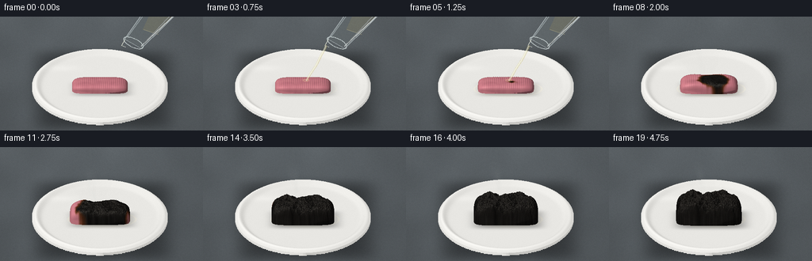
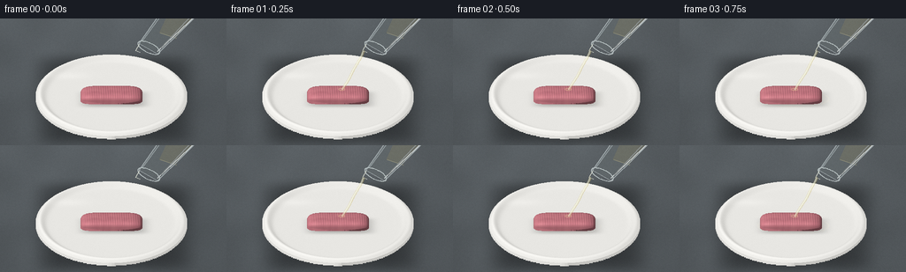

CODING AGENTS AS PIXEL WORLD MODELS
traex/GPT-6.1-Sol · material_0043
点击播放 · 原生 RGB 像素
逐轮保存的候选
回放视频、检查图与代码变化。
每份候选均可单独播放。实际图片检查记录在下方工具轨迹中。
候选 01播放与检查图
点击播放 · 原生 RGB 像素


展开代码变化
--- 上一保存版本
+++ 本次保存版本
@@ -0,0 +1,288 @@
+"""Procedural macro timelapse. All imagery is generated from mathematical surfaces."""
+from pathlib import Path
+import numpy as np
+from PIL import Image, ImageDraw, ImageFilter
+from scipy.ndimage import gaussian_filter, map_coordinates
+import artifact_io
+
+ROOT = Path(__file__).resolve().parent
+W,H,SS=256,144,2
+SW,SH=W*SS,H*SS
+rng=np.random.default_rng(427)
+ang=.57
+sn,cs=np.sin(ang),np.cos(ang)
+scale=34.
+cx,cy=126.,91.
+N=768
+
+# Stationary multiscale material maps, in physical surface coordinates.
+def field(sigma):
+ a=gaussian_filter(rng.standard_normal((N,N)),sigma)
+ return (a/(a.std()+1e-8)).astype(np.float32)
+large=field(24)
+medium=field(6)
+fine=field(1.15)
+micro=field(.45)
+xx=np.linspace(-3,3,N)[None,:]
+yy=np.linspace(-3,3,N)[:,None]
+pores=np.zeros((N,N),np.float32)
+for k in range(205):
+ px=rng.uniform(-1.5,1.5); py=rng.uniform(-.72,.72)
+ r=rng.uniform(.012,.053)
+ pores+=rng.uniform(.6,1.2)*np.exp(-((xx-px)**2+(yy-py)**2)/(2*r*r))
+rough=(.013*medium+.011*fine+.003*micro-.049*pores).astype(np.float32)
+
+def tex(a,x,y):
+ return map_coordinates(a,[(np.asarray(y)+3)*(N-1)/6,(np.asarray(x)+3)*(N-1)/6],order=1,mode='nearest',prefilter=False)
+
+def smooth(a):
+ a=np.clip(a,0,1)
+ return a*a*(3-2*a)
+
+U,V=np.meshgrid((np.arange(SW)+.5)/SS,(np.arange(SH)+.5)/SS)
+X=(U-cx)/scale
+VV=(V-cy)/scale
+Y=-VV/sn
+R=np.sqrt(X*X+Y*Y)
+
+# Subtly textured gray lab bench, soft light falling from the upper left.
+noise=gaussian_filter(rng.standard_normal((SH,SW)),.7)
+slow=gaussian_filter(rng.standard_normal((SH,SW)),24)
+slow/=slow.std()
+val=87+12*(1-V/SH)+2.0*noise+1.6*slow-12*((U-116)/195)**2
+base=np.stack([val*.92,val*.98,val*1.02],axis=-1)
+base=np.clip(base,0,255).astype(np.float32)
+# Broad dish contact shadow with a feathered outline.
+shadow=np.exp(-((X-.11)/2.52)**8-((Y+.14)/2.70)**8)*.42
+base*=1-shadow[...,None]
+
+# White ceramic bowl, rendered as an actual curved height surface.
+def dish_height(x,y):
+ r=np.sqrt(x*x+y*y)
+ z=.042+.034*(r/2.35)**2+.145*np.exp(-((r-2.36)/.14)**2)
+ return np.where(r<2.52,z,-100)
+
+# Intersect rays with rim and shallow interior.
+zprev=np.zeros_like(X)
+found=np.zeros(X.shape,bool)
+yhit=np.zeros_like(X)
+last=np.full(X.shape,-3.05)
+for yp in np.linspace(-3.05,3.05,138):
+ yp0=np.full(X.shape,yp)
+ zp=(-VV-yp*sn)/cs
+ good=(~found)&(zp<=dish_height(X,yp0))&(zp>=-.005)&(X*X+yp*yp<2.52**2)
+ if np.any(good):
+ lo=last[good].copy(); hi=yp0[good].copy(); xi=X[good]; vi=VV[good]
+ for _ in range(7):
+ m=(lo+hi)/2
+ hit=(-vi-m*sn)/cs<=dish_height(xi,m)
+ hi=np.where(hit,m,hi); lo=np.where(hit,lo,m)
+ yhit[good]=(lo+hi)/2; found[good]=True
+ last[:]=yp
+Z=dish_height(X,yhit)
+e=.003
+nx=-(dish_height(X+e,yhit)-dish_height(X-e,yhit))/(2*e)
+ny=-(dish_height(X,yhit+e)-dish_height(X,yhit-e))/(2*e)
+norm=np.sqrt(nx*nx+ny*ny+1)
+light=np.clip((nx*(-.43)+ny*(-.45)+.78)/norm,0,1)
+ceramic=194+43*light
+# faint porcelain micro texture and warm lower bounce
+finebench=rng.normal(0,.28,(SH,SW))
+col=np.stack([ceramic+5,ceramic+4,ceramic],axis=-1)+finebench[...,None]
+# Thin highlight along the smoothly rolled lip.
+rhit=np.sqrt(X*X+yhit*yhit)
+spec=np.exp(-((rhit-2.405)/.042)**2)*9
+col+=spec[...,None]
+base[found]=col[found]
+
+# A few soft reflections from the room in the polished ceramic.
+shine=np.exp(-((U-76)/22)**2-((V-65)/4)**2)*7
+base+=shine[...,None]*found[...,None]
+base=np.clip(base,0,255)
+
+# Camera sees a small original pale pink gum cushion, progressively carbonizing.
+def reaction(x,y,f):
+ p=np.clip((f-2.8)/13.,0,1)
+ radius=np.sqrt((x-.19)**2+((y+.04)*1.7)**2)
+ border=radius+.057*tex(large,x,y)+.023*tex(medium,x,y)
+ extent=-.26+2.05*p
+ return smooth((extent-border+.16)/.28)
+
+def gum_height(x,y,f):
+ growth=smooth((f-4)/15.)
+ a=1.035+.18*growth
+ b=.405+.105*growth
+ q=(np.abs(x/a)**5+np.abs(y/b)**5)
+ inside=q<1
+ out=np.full(np.shape(q),-100.,dtype=np.float32)
+ if np.any(inside):
+ xi=np.asarray(x)[inside]; yi=np.asarray(y)[inside]; qi=q[inside]
+ dome=np.maximum(1-qi,0)**.29
+ ch= reaction(xi,yi,f)
+ coarse=tex(large,xi,yi)
+ lumps=.82+.16*np.cos(xi*5.7+.4)*np.cos(yi*7.5)+.07*coarse
+ z=.045+dome*(.285+growth*.77*lumps)
+ z+=ch*(.004+growth)*tex(rough,xi,yi)
+ # Fine fold impressed on the initially rubbery piece.
+ z+=dome*.0027*np.sin(xi*82+yi*4)*(1-ch)
+ out[inside]=z
+ return out
+
+LIGHT=np.array([-.45,-.46,.765]); LIGHT/=np.linalg.norm(LIGHT)
+VIEW=np.array([0,-cs,sn]); HALF=LIGHT+VIEW; HALF/=np.linalg.norm(HALF)
+
+def gum_frame(f):
+ canvas=base.copy()
+ grow=smooth((f-4)/15.)
+ # Damp sulfuric-acid meniscus around the sample, not an opaque colored puddle.
+ acid=smooth((f-.5)/5)
+ ar=((X-.08)/(1.16+.17*acid))**2+((Y+.025)/(.51+.10*acid))**2
+ pool=(ar<1)&found
+ wet=np.exp(-((ar-.89)/.05)**2)*acid
+ tint=np.array([215,194,117])
+ opacity=np.clip(.13*acid*(1-ar),0,.13)
+ canvas[pool]=canvas[pool]*(1-opacity[pool,None])+tint*opacity[pool,None]
+ canvas+=wet[...,None]*np.array([9,7,1])
+ # Surface reflections, thin and broken by the changing meniscus.
+ reflection=(np.exp(-((Y+.33)/.011)**2)*np.exp(-((X-.06)/1.1)**6))*acid
+ canvas+=reflection[...,None]*np.array([17,17,12])
+ # A grounded, very soft contact shadow.
+ shade=np.exp(-((X-.08)/(1.06+.23*grow))**6-((Y+.04)/(.47+.15*grow))**6)*(.25+.13*grow)
+ canvas*=1-shade[...,None]*found[...,None]
+
+ # Ray tracing only the crop which can contain gum.
+ x0,x1=int(80*SS),int(173*SS)
+ y0,y1=int(35*SS),int(104*SS)
+ gx=X[y0:y1,x0:x1]; gv=VV[y0:y1,x0:x1]
+ got=np.zeros(gx.shape,bool); gy=np.zeros_like(gx)
+ prev=-.77
+ for yp in np.linspace(-.77,.77,105):
+ yp0=np.full(gx.shape,yp)
+ z=(-gv-yp*sn)/cs
+ good=(~got)&(z<=gum_height(gx,yp0,f))&(z>.025)
+ if np.any(good):
+ lo=np.full(good.sum(),prev); hi=np.full(good.sum(),yp)
+ x=gx[good]; v=gv[good]
+ for _ in range(7):
+ mid=(lo+hi)/2
+ hit=(-v-mid*sn)/cs<=gum_height(x,mid,f)
+ hi=np.where(hit,mid,hi); lo=np.where(hit,lo,mid)
+ gy[good]=(lo+hi)/2; got[good]=True
+ prev=yp
+ x=gx[got]; y=gy[got]
+ z=gum_height(x,y,f)
+ de=.0035
+ nxx=-(gum_height(x+de,y,f)-gum_height(x-de,y,f))/(2*de)
+ nyy=-(gum_height(x,y+de,f)-gum_height(x,y-de,f))/(2*de)
+ # Avoid unstable numerical normals at the silhouette's sharp edge.
+ nxx=np.clip(nxx,-12,12); nyy=np.clip(nyy,-12,12)
+ inv=1/np.sqrt(nxx*nxx+nyy*nyy+1)
+ diffuse=np.clip((nxx*LIGHT[0]+nyy*LIGHT[1]+LIGHT[2])*inv,0,1)
+ nh=np.clip((nxx*HALF[0]+nyy*HALF[1]+HALF[2])*inv,0,1)
+ ch=reaction(x,y,f)
+ texture=tex(medium,x,y); nf=tex(fine,x,y); pore=tex(pores,x,y)
+ pink=np.stack([226+texture*2.6,139+texture*2.4,150+texture*2.0],axis=-1)
+ # Caramelization -> mahogany -> matte charcoal.
+ brown=np.tile(np.array([106,52,24.]),(len(x),1))
+ dark=np.stack([27+nf*1.5,25+nf*1.4,23+nf*1.3],axis=-1)
+ t1=smooth(ch/.57); t2=smooth((ch-.28)/.7)
+ color=pink*(1-t1[:,None])+brown*t1[:,None]
+ color=color*(1-t2[:,None])+dark*t2[:,None]
+ ambient=.42+.54*diffuse
+ # Concave pores have true displaced edges and dark occlusion inside.
+ ambient*=1-np.clip(pore,0,1.8)*.23*ch
+ color*=ambient[:,None]
+ spec=(nh**(24-9*ch))*(9+21*ch+8*acid)
+ color+=spec[:,None]*np.array([1,.97,.91])
+ color+=np.clip(nf,0,2)[:,None]*ch[:,None]*1.7
+ crop=canvas[y0:y1,x0:x1]
+ crop[got]=color
+ return Image.fromarray(np.uint8(np.clip(canvas,0,255))), (cx,cy-float(gum_height(np.array([0.]),np.array([0.]),f)[0])*cs*scale)
+
+# Antialiased glassware and a thin flowing, translucent stream.
+def path(points):
+ return [(round(x*SS),round(y*SS)) for x,y in points]
+
+def composite_glass(im,f):
+ if f>7: return im
+ lift=max(f-5,0)*22
+ # A small tipped laboratory beaker comes from the upper right.
+ dx=max(f-5,0)*11
+ jitter=.65*np.sin(f*.52)
+ def tr(p): return (p[0]+dx+jitter,p[1]-lift)
+ body=[(157,28),(178,40),(233,-14),(201,-35)]
+ outline=[tr(p) for p in body]
+ mask=Image.new('L',(SW,SH),0); d=ImageDraw.Draw(mask)
+ d.polygon(path(outline),fill=255)
+ # Glass transmits the bench, with very gentle refraction and straw tint.
+ arr=np.asarray(im).astype(float)
+ shifted=np.roll(arr,3*SS,axis=1)
+ refracted=shifted*.94+np.array([12,13,12])
+ im=Image.composite(Image.fromarray(np.uint8(np.clip(refracted,0,255))),im,mask)
+ lay=Image.new('RGBA',(SW,SH)); d=ImageDraw.Draw(lay)
+ liquid=[tr(p) for p in [(180,16),(198,22),(226,-12),(201,-30)]]
+ d.polygon(path(liquid),fill=(190,165,80,33))
+ d.line(path([tr((181,16)),tr((199,22))]),fill=(242,226,157,83),width=SS)
+ d.line(path(outline+[outline[0]]),fill=(225,236,238,125),width=SS)
+ d.line(path([tr((178,37)),tr((231,-13))]),fill=(242,246,244,182),width=SS)
+ d.line(path([tr((182,33)),tr((225,-13))]),fill=(255,255,248,75),width=SS)
+ d.line(path([tr((161,25)),tr((202,-31))]),fill=(225,238,241,92),width=SS)
+ # Oval mouth around the angled spout, with both back and front rim.
+ mouth=[]
+ for a in np.linspace(0,2*np.pi,90):
+ mouth.append(tr((168+12*np.cos(a)+3.2*np.sin(a),33+6.0*np.cos(a)-4.3*np.sin(a))))
+ d.line(path(mouth),fill=(231,242,241,162),width=SS)
+ d.line(path([tr((157,29)),tr((153,36)),tr((158,38))]),fill=(245,247,231,190),width=SS)
+ if 1<=f<=5:
+ start=tr((154.3,36.3)); end=(130.0+.5*np.sin(f),80.5)
+ pts=[]
+ for t in np.linspace(0,1,100):
+ pts.append((start[0]+(end[0]-start[0])*t+.48*np.sin(t*9+f)*np.sin(np.pi*t),start[1]+(end[1]-start[1])*(t**.90)))
+ d.line(path(pts),fill=(202,181,105,110),width=3*SS)
+ d.line(path(pts),fill=(238,239,212,144),width=SS+1)
+ d.line(path([(a-.48,b) for a,b in pts]),fill=(255,252,227,157),width=1)
+ # Glossy impact halo, compact and oily rather than a water splash.
+ ex,ey=end
+ d.ellipse((int((ex-3.6)*SS),int((ey-1.3)*SS),int((ex+3.5)*SS),int((ey+1.4)*SS)),outline=(248,224,159,142),width=1)
+ elif f==6:
+ for px,py,rr in [(137,61,1.1),(132,73,1.25)]:
+ d.ellipse(((px-rr)*SS,(py-rr*1.6)*SS,(px+rr)*SS,(py+rr*1.6)*SS),fill=(241,233,194,138),outline=(251,250,229,131))
+ return Image.alpha_composite(im.convert('RGBA'),lay).convert('RGB')
+
+# Semi-transparent turbulent vapor with smooth temporal advection.
+def vapor(im,f,origin):
+ strength=smooth((f-5)/5)*(1-.45*smooth((f-15)/6))
+ if strength<=0: return im
+ uu,vv=U,V
+ density=np.zeros((SH,SW),np.float32)
+ ox,oy=origin
+ time=(f-5)*.34
+ for strand in range(4):
+ for j in range(21):
+ h=j*2.15+((time*14+strand*8)%9)
+ s=h/48
+ px=ox-4-strand*1.7-10*s+6*np.sin(s*7-time*1.3+strand*1.9)*s
+ py=oy-2-h
+ rx=1.1+4.5*s; ry=2.1+3*s
+ amp=.018*max(1-s,0)**1.3
+ density+=amp*np.exp(-((uu-px)/rx)**2-((vv-py)/ry)**2)
+ alpha=np.clip(density*strength,0,.145)
+ a=np.asarray(im).astype(float)
+ a=a*(1-alpha[...,None])+np.array([186,191,187])*alpha[...,None]
+ return Image.fromarray(np.uint8(np.clip(a,0,255)))
+
+frames=[]
+for f in range(20):
+ im,origin=gum_frame(f)
+ im=composite_glass(im,f)
+ im=vapor(im,f,origin)
+ im=im.resize((W,H),Image.Resampling.LANCZOS)
+ a=np.asarray(im).astype(float)
+ # Restrained photographic grain, maintained across the fixed camera shot.
+ film=np.random.default_rng(80+f).normal(0,.33,(H,W,1))
+ a=np.clip(a+film,0,255).astype(np.uint8)
+ frames.append(a)
+ print('Rendered frame',f,flush=True)
+frames=np.stack(frames)
+artifact_io.save(frames,ROOT)
+print('Saved',frames.shape,flush=True)
可观测工具轨迹
实际执行的命令与返回图片。
命令 1exit 0
/bin/bash -lc "ls -la && cat prompt.txt && printf '\\n---RULES---\\n' && cat GENERATION_RULES.md && printf '\\n---SPEC---\\n' && cat task_spec.json"
命令 2exit 0
/bin/bash -lc "cat artifact_io.py && printf '\\n---available---\\n' && python - <<'PY' import importlib.util for p in ['numpy','PIL','scipy','cv2']: print(p, bool(importlib.util.find_spec(p))) PY"
命令 3exit 0
/bin/bash -lc 'which ffmpeg || true; pwd'
命令 4exit 1
/bin/bash -lc "cat > generate.py <<'PY'
\"\"\"Procedural macro timelapse. All imagery is generated from mathematical surfaces.\"\"\"
from pathlib import Path
import numpy as np
from PIL import Image, ImageDraw, ImageFilter
from scipy.ndimage import gaussian_filter, map_coordinates
import artifact_io
ROOT = Path(__file__).resolve().parent
W,H,SS=256,144,2
SW,SH=W*SS,H*SS
rng=np.random.default_rng(427)
ang=.57
sn,cs=np.sin(ang),np.cos(ang)
scale=34.
cx,cy=126.,91.
N=768
# Stationary multiscale material maps, in physical surface coordinates.
def field(sigma):
a=gaussian_filter(rng.standard_normal((N,N)),sigma)
return (a/(a.std()+1e-8)).astype(np.float32)
large=field(24)
medium=field(6)
fine=field(1.15)
micro=field(.45)
xx=np.linspace(-3,3,N)[None,:]
yy=np.linspace(-3,3,N)[:,None]
pores=np.zeros((N,N),np.float32)
for k in range(205):
px=rng.uniform(-1.5,1.5); py=rng.uniform(-.72,.72)
r=rng.uniform(.012,.053)
pores+=rng.uniform(.6,1.2)*np.exp(-((xx-px)**2+(yy-py)**2)/(2*r*r))
rough=(.013*medium+.011*fine+.003*micro-.049*pores).astype(np.float32)
def tex(a,x,y):
return map_coordinates(a,[(np.asarray(y)+3)*(N-1)/6,(np.asarray(x)+3)*(N-1)/6],order=1,mode='nearest',prefilter=False)
def smooth(a):
a=np.clip(a,0,1)
return a*a*(3-2*a)
U,V=np.meshgrid((np.arange(SW)+.5)/SS,(np.arange(SH)+.5)/SS)
X=(U-cx)/scale
VV=(V-cy)/scale
Y=-VV/sn
R=np.sqrt(X*X+Y*Y)
# Subtly textured gray lab bench, soft light falling from the upper left.
noise=gaussian_filter(rng.standard_normal((SH,SW)),.7)
slow=gaussian_filter(rng.standard_normal((SH,SW)),24)
slow/=slow.std()
val=87+12*(1-V/SH)+2.0*noise+1.6*slow-12*((U-116)/195)**2
base=np.stack([val*.92,val*.98,val*1.02],axis=-1)
base=np.clip(base,0,255).astype(np.float32)
# Broad dish contact shadow with a feathered outline.
shadow=np.exp(-((X-.11)/2.52)**8-((Y+.14)/2.70)**8)*.42
base*=1-shadow[...,None]
# White ceramic bowl, rendered as an actual curved height surface.
def dish_height(x,y):
r=np.sqrt(x*x+y*y)
z=.042+.034*(r/2.35)**2+.145*np.exp(-((r-2.36)/.14)**2)
return np.where(r<2.52,z,-100)
# Intersect rays with rim and shallow interior.
zprev=np.zeros_like(X)
found=np.zeros(X.shape,bool)
yhit=np.zeros_like(X)
last=np.full(X.shape,-3.05)
for yp in np.linspace(-3.05,3.05,138):
yp0=np.full(X.shape,yp)
zp=(-VV-yp*sn)/cs
good=(~found)&(zp<=dish_height(X,yp0))&(zp>=-.005)&(X*X+yp*yp<2.52**2)
if np.any(good):
lo=last[good].copy(); hi=yp0[good].copy(); xi=X[good]; vi=VV[good]
for _ in range(7):
m=(lo+hi)/2
hit=(-vi-m*sn)/cs<=dish_height(xi,m)
hi=np.where(hit,m,hi); lo=np.where(hit,lo,m)
yhit[good]=(lo+hi)/2; found[good]=True
last[:]=yp
Z=dish_height(X,yhit)
e=.003
nx=-(dish_height(X+e,yhit)-dish_height(X-e,yhit))/(2*e)
ny=-(dish_height(X,yhit+e)-dish_height(X,yhit-e))/(2*e)
norm=np.sqrt(nx*nx+ny*ny+1)
light=np.clip((nx*(-.43)+ny*(-.45)+.78)/norm,0,1)
ceramic=194+43*light
# faint porcelain micro texture and warm lower bounce
finebench=rng.normal(0,.28,(SH,SW))
col=np.stack([ceramic+5,ceramic+4,ceramic],axis=-1)+finebench[...,None]
# Thin highlight along the smoothly rolled lip.
rhit=np.sqrt(X*X+yhit*yhit)
spec=np.exp(-((rhit-2.405)/.042)**2)*9
col+=spec[...,None]
base[found]=col[found]
# A few soft reflections from the room in the polished ceramic.
shine=np.exp(-((U-76)/22)**2-((V-65)/4)**2)*7
base+=shine[...,None]*found[...,None]
base=np.clip(base,0,255)
# Camera sees a small original pale pink gum cushion, progressively carbonizing.
def reaction(x,y,f):
p=np.clip((f-2.8)/13.,0,1)
radius=np.sqrt((x-.19)**2+((y+.04)*1.7)**2)
border=radius+.057*tex(large,x,y)+.023*tex(medium,x,y)
extent=-.26+2.05*p
return smooth((extent-border+.16)/.28)
def gum_height(x,y,f):
growth=smooth((f-4)/15.)
a=1.035+.18*growth
b=.405+.105*growth
q=(np.abs(x/a)**5+np.abs(y/b)**5)
inside=q<1
out=np.full(np.shape(q),-100.,dtype=np.float32)
if np.any(inside):
xi=np.asarray(x)[inside]; yi=np.asarray(y)[inside]; qi=q[inside]
dome=np.maximum(1-qi,0)**.29
ch= reaction(xi,yi,f)
coarse=tex(large,xi,yi)
lumps=.82+.16*np.cos(xi*5.7+.4)*np.cos(yi*7.5)+.07*coarse
z=.045+dome*(.285+growth*.77*lumps)
z+=ch*(.004+growth)*tex(rough,xi,yi)
# Fine fold impressed on the initially rubbery piece.
z+=dome*.0027*np.sin(xi*82+yi*4)*(1-ch)
out[inside]=z
return out
LIGHT=np.array([-.45,-.46,.765]); LIGHT/=np.linalg.norm(LIGHT)
VIEW=np.array([0,-cs,sn]); HALF=LIGHT+VIEW; HALF/=np.linalg.norm(HALF)
def gum_frame(f):
canvas=base.copy()
grow=smooth((f-4)/15.)
# Damp sulfuric-acid meniscus around the sample, not an opaque colored puddle.
acid=smooth((f-.5)/5)
ar=((X-.08)/(1.16+.17*acid))**2+((Y+.025)/(.51+.10*acid))**2
pool=(ar<1)&found
wet=np.exp(-((ar-.89)/.05)**2)*acid
tint=np.array([215,194,117])
opacity=np.clip(.13*acid*(1-ar),0,.13)
canvas[pool]=canvas[pool]*(1-opacity[pool,None])+tint*opacity[pool,None]
canvas+=wet[...,None]*np.array([9,7,1])
# Surface reflections, thin and broken by the changing meniscus.
reflection=(np.exp(-((Y+.33)/.011)**2)*np.exp(-((X-.06)/1.1)**6))*acid
canvas+=reflection[...,None]*np.array([17,17,12])
# A grounded, very soft contact shadow.
shade=np.exp(-((X-.08)/(1.06+.23*grow))**6-((Y+.04)/(.47+.15*grow))**6)*(.25+.13*grow)
canvas*=1-shade[...,None]*found[...,None]
# Ray tracing only the crop which can contain gum.
x0,x1=int(80*SS),int(173*SS)
y0,y1=int(35*SS),int(104*SS)
gx=X[y0:y1,x0:x1]; gv=VV[y0:y1,x0:x1]
got=np.zeros(gx.shape,bool); gy=np.zeros_like(gx)
prev=-.77
for yp in np.linspace(-.77,.77,105):
yp0=np.full(gx.shape,yp)
z=(-gv-yp*sn)/cs
good=(~got)&(z<=gum_height(gx,yp0,f))&(z>.025)
if np.any(good):
lo=np.full(good.sum(),prev); hi=np.full(good.sum(),yp)
x=gx[good]; v=gv[good]
for _ in range(7):
mid=(lo+hi)/2
hit=(-v-mid*sn)/cs<=gum_height(x,mid,f)
hi=np.where(hit,mid,hi); lo=np.where(hit,lo,mid)
gy[good]=(lo+hi)/2; got[good]=True
prev=yp
x=gx[got]; y=gy[got]
z=gum_height(x,y,f)
de=.0035
nxx=-(gum_height(x+de,y,f)-gum_height(x-de,y,f))/(2*de)
nyy=-(gum_height(x,y+de,f)-gum_height(x,y-de,f))/(2*de)
# Avoid unstable numerical normals at the silhouette's sharp edge.
nxx=np.clip(nxx,-12,12); nyy=np.clip(nyy,-12,12)
inv=1/np.sqrt(nxx*nxx+nyy*nyy+1)
diffuse=np.clip((nxx*LIGHT[0]+nyy*LIGHT[1]+LIGHT[2])*inv,0,1)
nh=np.clip((nxx*HALF[0]+nyy*HALF[1]+HALF[2])*inv,0,1)
ch=reaction(x,y,f)
texture=tex(medium,x,y); nf=tex(fine,x,y); pore=tex(pores,x,y)
pink=np.stack([226+texture*2.6,139+texture*2.4,150+texture*2.0],axis=-1)
# Caramelization -> mahogany -> matte charcoal.
brown=np.tile(np.array([106,52,24.]),(len(x),1))
dark=np.stack([27+nf*1.5,25+nf*1.4,23+nf*1.3],axis=-1)
t1=smooth(ch/.57); t2=smooth((ch-.28)/.7)
color=pink*(1-t1[:,None])+brown*t1[:,None]
color=color*(1-t2[:,None])+dark*t2[:,None]
ambient=.42+.54*diffuse
# Concave pores have true displaced edges and dark occlusion inside.
ambient*=1-np.clip(pore,0,1.8)*.23*ch
color*=ambient[:,None]
spec=(nh**(24-9*ch))*(9+21*ch+8*acid)
color+=spec[:,None]*np.array([1,.97,.91])
color+=np.clip(nf,0,2)[:,None]*ch[:,None]*1.7
crop=canvas[y0:y1,x0:x1]
crop[got]=color
return Image.fromarray(np.uint8(np.clip(canvas,0,255))), (cx,cy-float(gum_height(np.array([0.]),np.array([0.]),f)[0])*cs*scale)
# Antialiased glassware and a thin flowing, translucent stream.
def path(points):
return [(round(x*SS),round(y*SS)) for x,y in points]
def composite_glass(im,f):
if f>7: return im
lift=max(f-5,0)*22
# A small tipped laboratory beaker comes from the upper right.
dx=max(f-5,0)*11
jitter=.65*np.sin(f*.52)
def tr(p): return (p[0]+dx+jitter,p[1]-lift)
body=[(157,28),(178,40),(233,-14),(201,-35)]
outline=[tr(p) for p in body]
mask=Image.new('L',(SW,SH),0); d=ImageDraw.Draw(mask)
d.polygon(path(outline),fill=255)
# Glass transmits the bench, with very gentle refraction and straw tint.
arr=np.asarray(im).astype(float)
shifted=np.roll(arr,3*SS,axis=1)
refracted=shifted*.94+np.array([12,13,12])
im=Image.composite(Image.fromarray(np.uint8(np.clip(refracted,0,255))),im,mask)
lay=Image.new('RGBA',(SW,SH)); d=ImageDraw.Draw(lay)
liquid=[tr(p) for p in [(180,16),(198,22),(226,-12),(201,-30)]]
d.polygon(path(liquid),fill=(190,165,80,33))
d.line(path([tr((181,16)),tr((199,22))]),fill=(242,226,157,83),width=SS)
d.line(path(outline+[outline[0]]),fill=(225,236,238,125),width=SS)
d.line(path([tr((178,37)),tr((231,-13))]),fill=(242,246,244,182),width=SS)
d.line(path([tr((182,33)),tr((225,-13))]),fill=(255,255,248,75),width=SS)
d.line(path([tr((161,25)),tr((202,-31))]),fill=(225,238,241,92),width=SS)
# Oval mouth around the angled spout, with both back and front rim.
mouth=[]
for a in np.linspace(0,2*np.pi,90):
mouth.append(tr((168+12*np.cos(a)+3.2*np.sin(a),33+6.0*np.cos(a)-4.3*np.sin(a))))
d.line(path(mouth),fill=(231,242,241,162),width=SS)
d.line(path([tr((157,29)),tr((153,36)),tr((158,38))]),fill=(245,247,231,190),width=SS)
if 1<=f<=5:
start=tr((154.3,36.3)); end=(130.0+.5*np.sin(f),80.5)
pts=[]
for t in np.linspace(0,1,100):
pts.append((start[0]+(end[0]-start[0])*t+.48*np.sin(t*9+f)*np.sin(np.pi*t),start[1]+(end[1]-start[1])*(t**.90)))
d.line(path(pts),fill=(202,181,105,110),width=3*SS)
d.line(path(pts),fill=(238,239,212,144),width=SS+1)
d.line(path([(a-.48,b) for a,b in pts]),fill=(255,252,227,157),width=1)
# Glossy impact halo, compact and oily rather than a water splash.
ex,ey=end
d.ellipse((int((ex-3.6)*SS),int((ey-1.3)*SS),int((ex+3.5)*SS),int((ey+1.4)*SS)),outline=(248,224,159,142),width=1)
elif f==6:
for px,py,rr in [(137,61,1.1),(132,73,1.25)]:
d.ellipse(((px-rr)*SS,(py-rr*1.6)*SS,(px+rr)*SS,(py+rr*1.6)*SS),fill=(241,233,194,138),outline=(251,250,229,131))
return Image.alpha_composite(im.convert('RGBA'),lay).convert('RGB')
# Semi-transparent turbulent vapor with smooth temporal advection.
def vapor(im,f,origin):
strength=smooth((f-5)/5)*(1-.45*smooth((f-15)/6))
if strength<=0: return im
uu,vv=U,V
density=np.zeros((SH,SW),np.float32)
ox,oy=origin
time=(f-5)*.34
for strand in range(4):
for j in range(21):
h=j*2.15+((time*14+strand*8)%9)
s=h/48
px=ox-4-strand*1.7-10*s+6*np.sin(s*7-time*1.3+strand*1.9)*s
py=oy-2-h
rx=1.1+4.5*s; ry=2.1+3*s
amp=.018*(1-s)**1.3
density+=amp*np.exp(-((uu-px)/rx)**2-((vv-py)/ry)**2)
alpha=np.clip(density*strength,0,.145)
a=np.asarray(im).astype(float)
a=a*(1-alpha[...,None])+np.array([186,191,187])*alpha[...,None]
return Image.fromarray(np.uint8(np.clip(a,0,255)))
frames=[]
for f in range(20):
im,origin=gum_frame(f)
im=composite_glass(im,f)
im=vapor(im,f,origin)
im=im.resize((W,H),Image.Resampling.LANCZOS)
a=np.asarray(im).astype(float)
# Restrained photographic grain, maintained across the fixed camera shot.
film=np.random.default_rng(80+f).normal(0,.33,(H,W,1))
a=np.clip(a+film,0,255).astype(np.uint8)
frames.append(a)
print('Rendered frame',f,flush=True)
frames=np.stack(frames)
artifact_io.save(frames,ROOT)
print('Saved',frames.shape,flush=True)
PY
python generate.py"命令 5exit 0
/bin/bash -lc "python - <<'PY'
p='generate.py'
s=open(p).read().replace('amp=.018*(1-s)**1.3','amp=.018*max(1-s,0)**1.3')
open(p,'w').write(s)
PY
python generate.py"命令 6exit 0
/bin/bash -lc "python - <<'PY'
import numpy as np
from PIL import Image
for i in [0,5,10,19]:
a=np.asarray(Image.open('frames/%02d.png'%i))
print(i,'min/max',a.min(),a.max(),'gum center',a[80,125], 'dark pixels in sample crop',int((a[50:103,82:170].mean(2)<55).sum()))
print('Artifacts:', __import__('os').listdir('.'))
PY"保存候选 1 份；完成命令 6 次；可验证图片返回 0 张。原始 API 响应与完整日志保留在本地。